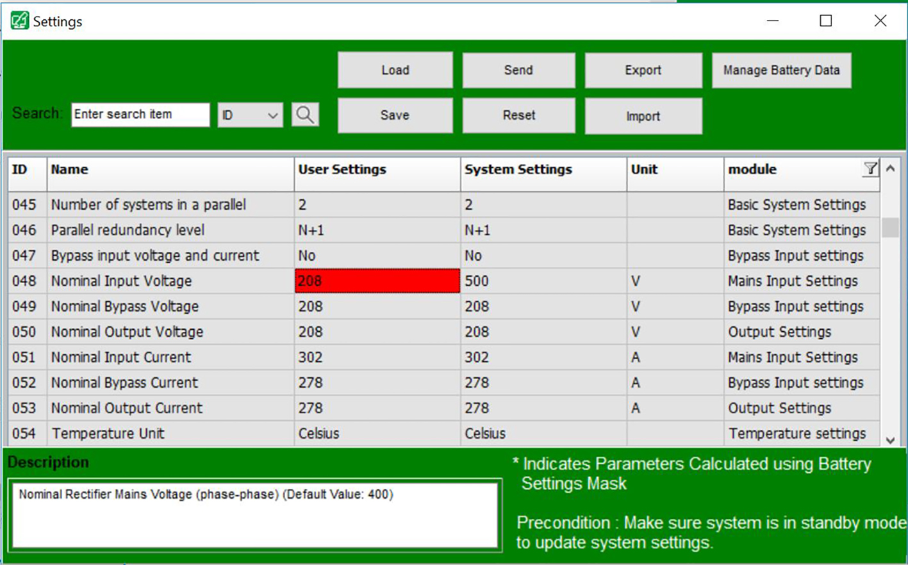
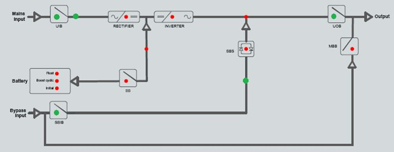

For units built after July 2018 (without transformer), the
display will show Waiting for controllers.
Waiting for controllersPlease wait...
If the display shows this message, follow steps a and b below.
If the display does not show this message, continue with step 4.
Change setting 048 from 500 to 208 via the UPS Tuner.

Open UIB, wait 30 seconds and then close UIB.
The unit should now be in Standby mode.
From the Main Menu, select Diagnosis using the UP/DOWN keys
and the ENTER key and check the U DC bus. See View Diagnosis for more information.
The DC bus voltages must be about 300 VDC. (+) and (–) may
not be completely balanced.
U dc-bus: + 130.0V -170.0V
If there is already a big load on the DC bus this rectifier
will not be able to charge the DC bus to an acceptable voltage. If
the DC bus voltages are correct, please proceed to the next step.
If an input transformer is installed:
From the Main Menu, select System status using the UP/DOWN
keys and the ENTER key and check the measured input voltage before
the transformer. See View System Status for more information.
If the input voltages are correct, you can proceed.
If a bypass transformer is installed:
From the Main Menu, select System status using the UP/DOWN
keys and the ENTER key and check the measured bypass voltage before
the transformer.
From the Main Menu, select Diagnosis using the UP/DOWN keys
and the ENTER key and check the measured bypass voltage after the
transformer.
If the bypass voltages are correct, you can proceed.
If the HMI has been replaced, load the settings sheet to
the new HMI: Download the default settings file for the UPS from ServiceView.
See how to import the settings file or change the settings manually
in Configure UPS Settings with Tuner.
Set the following settings for UPS systems with battery
cabinet — find the relevant settings in ServiceView for the
specific battery configuration.
Table 1. Settings to Configure for UPS Systems with Battery Cabinet
Setting number
Description
59
Battery temperature compensation upper level
60
Battery temperature compensation lower level
61
Battery temperature compensation coefficient
62
Float voltage
63
Boost voltage
64
Initial
voltage
65
Cyclic voltage
66
Float current
67
Boost current
68
Initial
current
69
Cyclic current
70
Cyclic charge
time on in hours
71
Cyclic charge
repeat cycle in days
72
Boost charge
time
73
Initial
charge time
313
Charging
Time up to 80%
314
Charging
Time 80%...100% (float)
315
Charging
Time 80%...100% (boost)
316
Charging
Time 80%...100% (cyclic)
317
BatRunTimeCalc
Par1
318
BatRunTimeCalc
Par2
319
BatRunTimeCalc
Par3
320
BatRunTimeCalc
Par4
321
BatCapCalc
Par1
322
BatCapCalc
Par2
323
BatCapCalc
Par3
324
BatCapCalc
Par4
325
BatCapCalc
Par5
326
BatCapCalc
Par6
327
BatCap at
0°C
328
BatCap at
40°C
Check/adjust the following settings if the HMI has been
replaced.1
Table 2. Settings for 25–50 kVA UPS Systems with Input Transformer
(Single Mains)
Setting number
Description
Setting
415
Enable Mimic
LEDs byte 0
204
416
Enable Mimic
LEDs byte 1
15
417
Enable Mimic
LEDs byte 2
255
418
Enable Mimic
LEDs byte 3
192
419
Enable Mimic
LEDs byte 4
3
420
Enable Mimic
LEDs byte 5
204
421
Enable Mimic
LEDs byte 6
7
422
Enable Mimic
LEDs byte 7
15
423
Enable Mimic
LEDs byte 8
127
Table 3. Settings for 75–100 kVA UPS Systems with Input Transformer
(Single Mains) and 25–100 kVA Systems with Input and Bypass
Transformers (Dual Mains)
Setting number
Description
Setting
415
Enable Mimic
LEDs byte 0
204
416
Enable Mimic
LEDs byte 1
15
417
Enable Mimic
LEDs byte 2
255
418
Enable Mimic
LEDs byte 3
192
419
Enable Mimic
LEDs byte 4
3
420
Enable Mimic
LEDs byte 5
252
421
Enable Mimic
LEDs byte 6
7
422
Enable Mimic
LEDs byte 7
15
423
Enable Mimic
LEDs byte 8
127
Table 4. Settings for 25–100 kVA UPS Systems with 480/600V Input/Bypass
Transformers
Setting number
Description
Setting
402
(S)ingle or (D)ual Input
S INP = 1
D INP = 5
025
System type UL or IEC
208-208 No Transformer
3
PXC 25-50kW 480/208V (or 600/208V) UPS – single input
Turn static switch input breaker SSIB to the OFF position.
Wait 30 seconds.
Turn unit input breaker UIB to the ON position and wait
for the UPS to turn on.
Verify that the settings have been changed in Tuner.
If the DC bus voltage cannot be read out or if it differs
drastically from the above-mentioned value, check the troubleshooting
table below. Otherwise, please proceed to the next step.
Table 5. Troubleshooting
Problem
Solution
Controller/display/Interface
not powered
Check the supply
wiring. The controller is supplied by the PM. The upper power module
is connected to the upper right connector on the CBOX (24V/15V with
positive upper pin). The display is then connected to the uppermost
controller on top right side. The Interface is then connected to the
lowermost controller on the bottom right side. All controllers must
be connected from the top to the bottom controller by connecting the
bottom right connector of the upper controller with the top right
connector of the lower one.
Text No valid system configuration
file available
Please
retry to download the system setting sheet.
Text Waiting for controllers or System configuration setup please wait…
If
this text is indicated the display gets no ok by the master controller.
This can happen if the configuration is downloaded correctly but the
controller is not compatible with the display. The same text appears
if the self-test fails. Please check the self-test state in the service
port directly on the controller in the RAW status menu.
Text Abus communication failure
Check
the Abus wiring and if all terminators are located correctly. This
means the display is the first Abus member with built in terminator
then all controllers are connected together and at the end the interface
is connected. If no relay board is available the terminator is located
on the interface, else the relay board is connected to the interface
and the terminator is located on the relay board.
Open the unit input breaker UIB.
For a REPO with internal supply: Reconnect the jumper on the
EPO terminals J1602 between pin 3 and 4 on the external connection
board 0P2553 (A811).
For a REPO with external supply: Deactivate the REPO switch.
Close the unit input breaker UIB.
Close the static switch input breaker SSIB.
Wait for Logic to boot and display to normalize.
Check LED lights on Controllers to verify that all are on and
working and that only 1 is saying it is the master.
The PFC starts
to work. The closing of the input contactor can be heard. If everything
is ok the contactor stays closed. A DC-bus voltage of about +/- 225V
can be read out in the diagnosis menu.
U dc-bus: + 225.0V -225.0V
The mimic diagram is now displaying the correct switch position:

If something is wrong the input contactor is opened after
a short time. Check if input phases are available and within tolerance.
Check the indications. A missing input phase or a wrong
input range can be checked very easily.
Check the indication of the unit input breaker UIB,
the battery breaker BB and the static switch input breaker SSIB. Check
if input and bypass are within tolerance.
If all values are ok, please proceed to the next step.
Press the ON button on the display
to turn on the UPS.
Do not close the battery breaker(s) BB! Now the inverter
only is turned on. If everything is ok, check the measurements and
the indication on the display.
Check output frequency. If the output frequency is about
60 Hz you will be able to go into bypass operation via the display.
Transfer the load to static bypass:
From the Main Menu, select System Control > Bypass Control using the UP/DOWN keys and the ENTER key.
Confirm action:UPS into Bypass NO, Abort►YES, UPS into Bypass
Select YES, UPS into Bypass to
transfer to requested static bypass operation. The following message
will appear on the display:
The load is supplied via the static bypass switch
If the transfer to static bypass was successful, please
proceed to the next step.
Transfer the UPS back to normal operation:
From the Main Menu, select System Control > Bypass Control using the UP/DOWN keys and the ENTER key.
Select YES, UPS out of Bypass to transfer to normal operation.
Confirm action:UPS out of Bypass NO, Abort►YES, UPS out of Bypass
If the transfer was successful, please proceed to the
next step to calibrate the UPS system. See Configure UPS Settings with Tuner on how to access
the system settings via Tuner.
1 These settings are set in the factory, but will be lost
if the HMI is replaced.
2 If the displayed voltage
is higher than the actual voltage – decrease the value in the
corresponding calibration setting. If the displayed voltage is lower
than the actual voltage – increase the value in the corresponding
calibration setting.
3 If the displayed current
is higher than the actual current – decrease the value in the
corresponding calibration setting. If the displayed current is lower
than the actual current – increase the value in the corresponding
calibration setting.